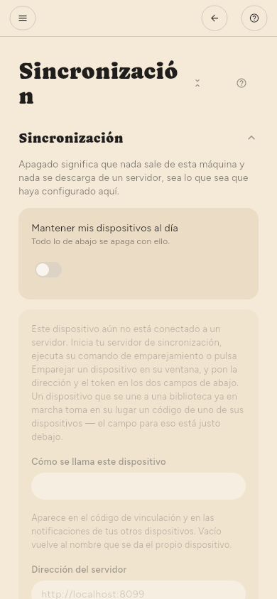

← Gestionar las fuentes · Contenido · Teclado →
Sincronización
Configuración › Avanzado › Sincronización › Sincronización. Tus dispositivos se mantienen al día entre sí: lo que has leído, lo que has guardado, tus resaltados y los propios artículos.
Está cifrada de extremo a extremo: el servidor guarda texto cifrado y no puede leer tu biblioteca. No hay ningún servicio alojado en el que darse de alta: la dirección que pones es la de un servidor que gestionas tú.

Cuándo se ejecuta
Configuración › Avanzado › Sincronización › Cuándo sincronizar › Con qué frecuencia ofrece un reloj (desde cada 15 minutos hasta una vez al día) y, en su lugar, momentos:
- Tras una comprobación: en cuanto se han consultado todas las fuentes, antes de resumir nada. Con un modelo local, los resúmenes pueden tardar veinte minutos, y los artículos están listos mucho antes.
- Tras resumir: cuando termina toda la comprobación, para que una sola sincronización lleve juntos los artículos y sus resúmenes.
- Tras cada cambio: poco después de que leas, guardes o etiquetes algo.
Mientras la app está en pantalla, Configuración › Avanzado › Sincronización › Cuándo sincronizar › Sincronizar cada cambio mientras la app está abierta envía cada cambio en pocos segundos, diga lo que diga Con qué frecuencia; el reloj solo se aplica entonces en segundo plano. Está activada hasta que la desactives, y Solo cuando lo pida sigue significando solo cuando lo pidas. Volver a la app sincroniza una vez, con cualquier opción salvo Solo cuando lo pida. Los cambios de tus otros dispositivos llegan en pocos segundos mientras la app está abierta.
Elijas lo que elijas, una conexión medida o una regla de batería la siguen frenando.
Conseguir el servidor
El servidor es un programa aparte, gratuito y de código abierto. Descárgalo desde su página de versiones:
- SummaReader Sync, un AppImage para Linux: una ventana que arranca el servidor y muestra sus dispositivos.
- Los paquetes headless para Linux, macOS y Windows: solo el servidor, para un equipo que esté siempre encendido.
Ejecútalo en un ordenador al que lleguen todos tus dispositivos, por ejemplo uno que esté siempre encendido en casa. Al arrancar, muestra su dirección y la huella de su certificado. Su README explica también Docker y un servicio de systemd.
Conectar el primer dispositivo
- En el servidor, ejecuta
summareader-sync first-device "My library" "Desktop"o pulsa Pair a device en la ventana de SummaReader Sync. Muestra un token de dispositivo una sola vez y no puede volver a mostrarlo. - Abre Configuración › Avanzado › Sincronización › Sincronización y activa Mantener mis dispositivos al día.
- Rellena Dirección del servidor, que empieza por
https://. Para un servidor en la misma red, pulsa Encontrarlo en mi red. - Pega el token en Token del dispositivo.
- En el primer contacto, la app muestra la huella del certificado del servidor. Compárala con la que mostró el servidor y acéptala solo si son iguales.
Emparejar un segundo dispositivo
- Conecta el primer dispositivo como se explica arriba.
- En Configuración › Avanzado › Sincronización › Otro dispositivo, Crear un código muestra un código QR y el mismo código en texto.
- En el segundo dispositivo, escanéalo o pégalo debajo de O unirse con un código y luego pulsa Usar el código. Un teléfono, un Mac y un escritorio Linux con webcam pueden escanear el código; en Windows, pégalo.
La primera sincronización con un servidor nuevo pregunta antes de subir nada: un servidor que nunca ha visto tu biblioteca es una decisión, no un detalle.
El código de recuperación
Se crea una vez, en Configuración › Avanzado › Sincronización › Clave de recuperación. Es la única forma de volver a tu biblioteca si pierdes todos los dispositivos emparejados. Nadie puede volver a emitirlo.
El texto de los artículos
El estado de lectura, los resaltados y los propios artículos viajan automáticamente. Su texto e imágenes son lo que más ocupa, y por defecto se quedan detrás de una referencia: la sincronización le dice a este dispositivo que existe una copia, y se descarga cuando abres el artículo.
Configuración › Avanzado › Sincronización › Sincronización › Guardar todo en este dispositivo cambia eso: el texto y las imágenes de cada artículo se descargan según llegan. Es un ajuste por dispositivo, no por biblioteca: vale la pena en un equipo en el que lees sin conexión, y son muchos datos en un teléfono para artículos que no vas a abrir. Cada sincronización dedica a esto como mucho el tiempo de Dedicar como máximo, primero el texto y luego las imágenes. Mientras la aplicación está abierta, la descarga sigue después en segundo plano hasta que no falta nada, así que un artículo que abras más tarde ya tiene su imagen. Cuando la aplicación pasa a segundo plano, se detiene y sigue en la siguiente sincronización.